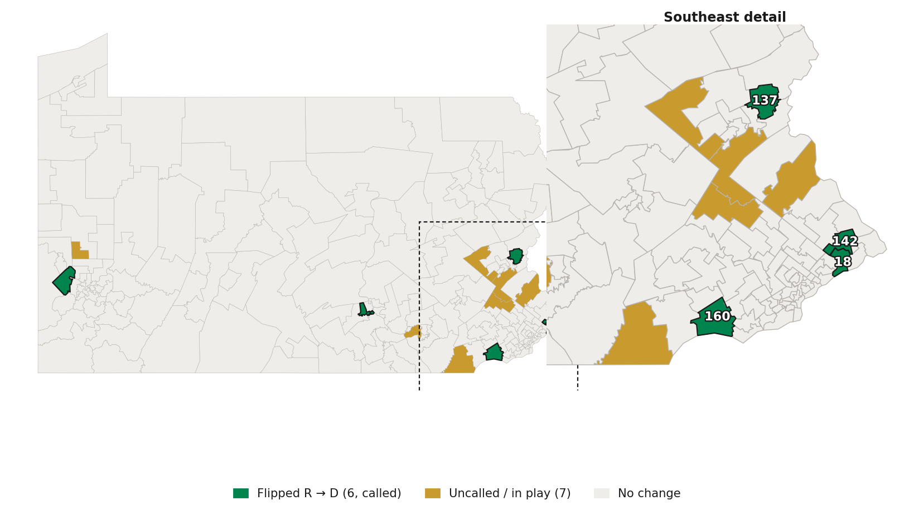
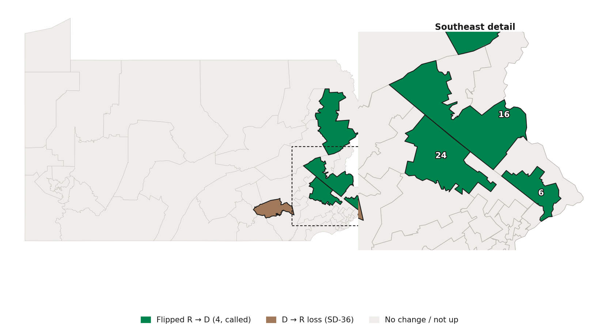

What PA's 2026 Elections Mean for the Built Environment
Housing + transit · November 2026 · PA housing & transit coalitions
Preliminary — unofficial returns, House races still uncalled
The headline
Democrats won a trifecta — and flipped the Senate
~108/203
State House — D
Held & expanded (from 103). 7 races uncalled.
26/50
State Senate — D
Flipped from R 27–23. All 4 flips AP-called. First D majority since 1994.
3
Branches aligned
House + Senate + Shapiro. Bills can finally move through both chambers.
Senate before
23 D
27 R
Senate after
26 D
24 R
Why it matters: the House always passed these bills — they died in a Republican Senate. That wall is gone.
2
Where the seats changed hands
It was the southeast suburban collar

House — 6 flips, all R→D. Bucks, Delaware/Chester, Lehigh Valley, Cumberland, Allegheny.

Senate — the chamber flips. All 4 R→D called; SD-36 the lone D→R loss.
3
The cost on zoning
We lost two Republican champions
District
Member (lost)
HB 2186 ADU
HB 2109 Occupancy
HD-142
Joe Hogan
Yea
Yea
HD-137
Joe Emrick
Yea
Yea
HD-44
Valerie Gaydos
Yea
Yea
No assuming the newcomers. Their Democratic successors are unproven — none has voted on these bills. The honest read is a loss of two rock-solid R champions, not an automatic swap for new Yeas.
4
Transit funding
The same wall — now gone
108–95
HB 1788 passed House
27–22
Senate tabled Saval's funding amendment
4
Anti-transit senators defeated
Farry, Pennycuick, Coleman, Brown — all voted to table it.
But housing ≠ transit. Hogan was pro-both; Emrick & Gaydos pro-housing / anti-transit; Williams the reverse; incoming Tom Jones (SD-36) is pro-ADU but anti-transit.
5
What changes in the Senate
New committee gavels (likely)
Urban Affairs & Housing
from Picozzi (R)
Nikil Saval (D)
Local Government
from Keefer (R)
Patty Kim (D)
Transportation
from Judy Ward (R)
Marty Flynn (D)
Not final. The Senate Democratic caucus doesn't assign committee chairs until it organizes in the new year. These are the likely incoming chairs — Saval notably authored both the housing coalition's case and the tabled transit amendment.
6
What it means
The chokepoint is gone. Now the work.
Both fights can move. A D Senate + D House + Shapiro turns "passes the House, dies in the Senate" into bills that reach the desk.
Protect a thin majority & a thinner bipartisan bench. We lost proven R champions; the new members are unproven — talk to them now.
Pick up where we can. Tom Jones (SD-36) is a proven ADU vote; surviving Rs like Langerholc & Robinson sit on pro-reform delegations.
Mind the gaps. Housing and transit aren't the same coalition — and the newcomers need a conversation, not an assumption.